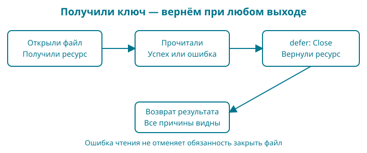

9. Файл не открылся: ошибки и освобождение ресурсов
Название книги пока живёт в исходнике. Чтобы исправить опечатку, приходится менять программу. Сегодня вынесем название в title.txt, а прежние правила проверки оставим на месте. После удачного чтения карточка пройдёт тот же метод Publish, что и в главе 8.
Контрольная точка: examples/09-errors. Вам понадобятся функции, несколько возвращаемых значений, структуры и указатели. Новые вещи — значение ошибки, отложенный вызов и небольшой договор чтения — разберём здесь, до самостоятельного задания.
Набираете сами: скопируйте папку главы 8, замените main.go листингом этой главы, добавьте file.go, file_test.go, defer_test.go из контрольной точки и обычный текстовый файл title.txt в UTF-8 без BOM. Остальные Go-файлы и go.mod сохраните. Расширение должно быть .txt, а не .txt.txt. Терминал запускайте в этой папке: относительный путь к названию отсчитывается от неё. BOM — необязательная метка кодировки в начале текстового файла. Для опыта выберите в меню кодировки редактора обычную UTF-8 без BOM: лишняя метка не является частью названия.
Образ: ключ и записка у двери
Представьте читальный зал. Вы получили ключ от шкафчика, достали нужный лист и ушли. Лист уже у вас, но ключ всё ещё надо вернуть. Теперь другой случай: шкафчик открылся, а нужного листа нет. Возвращать ключ нужно и тогда. А если ключ вообще не выдали, возвращать нечего.
Для открытого файла есть похожая обязанность: освободить ресурс после работы. Проверка ошибки отвечает на вопрос «получили ли мы ключ?». defer позволяет сразу оставить записку: «перед выходом вернуть». Тогда ранний выход из-за плохого названия не забудет о закрытии файла.
Записка — опора, а не устройство операционной системы. Открытый файл не является бумажным ключом. И закрытие файла не означает автоматического сохранения любых данных на физический носитель. Сейчас мы читаем; надёжную запись разберём отдельно.
До файла: функция как значение, ошибка и defer
Новые механизмы сначала проверим без файловой системы. Команды выполняются из корня 09-errors; каждый каталог labs содержит самостоятельный пакет main.
Передать функцию — не значит вызвать её
В operation := twice имя функции стоит без (): сохраняется функция. В operation(3) скобки запускают её. Тип func(int) int означает функцию с одним параметром int и одним результатом int; имя параметра в этом типе необязательно. Параметр operation функции apply принимает такое значение и вызывает его позднее. Это основа обратного вызова, который понадобится HTTP-обработчику.
package main
import "fmt"
func twice(value int) int {
return value * 2
}
func apply(value int, operation func(int) int) int {
return operation(value)
}
func main() {
operation := twice
fmt.Println(operation(3), apply(4, operation))
increment := 1
next := func(value int) int { return value + increment }
fmt.Println(next(3))
increment = 5
fmt.Println(next(3))
}
go run ./labs/01-functions
6 8
4
8
func(value int) int { ... } создаёт функцию без имени. Она использует increment из внешнего блока: это замыкание. После присваивания increment = 5 следующий вызов видит 5. Замыкание сохраняет доступ к переменной, а не навсегда запоминает её прежнее число. Измените: перед созданием функции сохраните saved := increment и используйте в теле saved. Второй вызов теперь тоже вернёт 4, поскольку saved мы не меняли.
Ошибка — значение с поведением
error — готовый интерфейс языка с методом Error() string. Интерфейс задаёт доступное поведение, а конкретный тип предоставляет реализацию. Чтобы начать пользоваться этим договором, не требуется уже уметь строить большую архитектуру интерфейсов. В опыте наш маленький тип явно показывает, откуда берётся метод.
package main
import (
"errors"
"fmt"
)
type titleError struct{ reason string }
func (problem titleError) Error() string {
return problem.reason
}
func main() {
var absent error
fmt.Println(absent == nil)
var problem error = titleError{reason: "empty title"}
fmt.Println(problem.Error())
cause := errors.New("missing file")
wrapped := fmt.Errorf("read title: %w", cause)
fmt.Println(wrapped)
fmt.Println(errors.Is(wrapped, cause))
fmt.Println(errors.Is(wrapped, errors.New("missing file")))
}
go run ./labs/03-errors
true
empty title
read title: missing file
true
false
titleError — структура из главы 8, Error — её метод. Поэтому значение структуры можно присвоить переменной типа error; отдельного слова implements в Go нет. Через интерфейс вызывающий код использует обещанный метод, не читая внутреннее поле reason. У нулевой переменной интерфейса absent нет конкретного значения, поэтому она равна nil. Нюанс интерфейса, внутри которого лежит nil-указатель, разберём отдельно в главе 18; не подменяйте им обычный return nil.
fmt.Errorf с %w добавляет контекст и сохраняет причину. errors.Is проверяет цепочку причин, а не совпадение текста. Два отдельных вызова errors.New("missing file") создают разные ошибки, поэтому последняя проверка даёт false. Проверка: замените %w на %v; сообщение выглядит похоже, но связь с причиной исчезает и первая проверка errors.Is становится ложной. Верните %w.
Что именно откладывает defer
defer регистрирует вызов до выхода из текущей функции. Аргументы обычного вызова вычисляются сразу; само действие выполняется позднее. Несколько действий исполняются в обратном порядке регистрации. Отложенное замыкание может прочитать переменную уже после её изменения.
package main
import "fmt"
func observe() {
value := 1
defer fmt.Println("argument", value)
defer func() { fmt.Println("closure", value) }()
value = 2
fmt.Println("body", value)
}
func result() (value int) {
defer func() { value = value + 1 }()
return 10
}
func main() {
observe()
fmt.Println("result", result())
}
go run ./labs/02-defer
body 2
closure 2
argument 1
result 11
В observe сначала печатается тело. Затем замыкание читает новое значение 2; последний вызов печатает аргумент 1, сохранённый при регистрации. Закрывающие () после тела анонимной функции обозначают вызов, который откладывается; без них это было бы лишь значение функции.
В result() (value int) результат имеет имя и ведёт себя как переменная функции. return 10 сначала присваивает ей 10, затем defer увеличивает её до 11, и только после этого вызывающий получает 11. Это механизм, который позволит сохранить ошибку закрытия ресурса.
Перед продолжением: переставьте два defer и сначала запишите ожидаемый порядок строк. Объясните, почему значение обычного аргумента всё равно остаётся 1. Если это пока не получается, повторите опыт; длинный листинг чтения файла не заменит понимания порядка действий.
Сначала результат
В готовой папке есть прежние Book, расчёт скидки, проверка названия и их тесты. Добавился файл title.txt:
Go: от первой строки до интернет-магазина
Два пробела в начале строки здесь намеренные. После запуска go run . получим:
Go: от первой строки до интернет-магазина
Опубликована: true
Файл нужен только для названия. Цену и валюту оставляем в программе, чтобы не изучать одновременно собственный формат каталога. Это промежуточный шаг, а не готовое хранилище магазина.
Вот новый main.go:
package main
import (
"errors"
"fmt"
"os"
)
func main() {
if err := run(); err != nil {
fmt.Fprintln(os.Stderr, err)
os.Exit(1)
}
}
func run() error {
title, err := loadTitle("title.txt")
if err != nil {
return err
}
book := Book{ID: "go-shop", Title: title, PriceMinor: 249900, Currency: "KZT"}
if !book.Publish() {
return errors.New("карточка книги не прошла проверку")
}
fmt.Println(book.Title)
fmt.Println("Опубликована:", book.Published)
return nil
}
Сначала run получает название, затем создаёт карточку и проверяет её прежним методом. Печать происходит после успешной проверки. Ошибка не превращается в пустую опубликованную книгу.
Что изменилось по сравнению с bool
Раньше второй результат говорил true или false. Теперь хочется различать причины: файла нет, прочитать его не удалось, название недопустимо. Для этого функция возвращает error.
error — предопределённый интерфейс Go. Пока достаточно его маленького договора: значение ошибки умеет предоставлять описание через метод Error() string. Интерфейс описывает доступное поведение. Какие конкретные типы могут его выполнять и как устроены наборы методов, подробно разберём в главе 18. Здесь нам нужны два состояния: nil означает отсутствие ошибки, ненулевое значение — ошибку.
errors.New("описание") создаёт ошибку с сообщением. return nil в run означает успешное завершение. Это результат функции, а не команда печати. В функции с результатами (string, error) успешный возврат выглядит как return title, nil, а неудачный — как return "", err.
Не делайте вывод о неудаче только по пустой строке. Проверять нужно возвращённую ошибку. В наших функциях при ошибке результат специально очищается, но такой договор не распространяется автоматически на все функции стандартной библиотеки.
Где принять решение об ошибке
main вызывает run и решает, как завершить программу. Запись if err := run(); err != nil содержит два шага: сначала вызов и объявление err, затем условие после точки с запятой. Здесь ; написана явно: она отделяет подготовительное действие от проверки. Имя err доступно внутри этого if.
fmt.Fprintln(os.Stderr, err) выводит сообщение в стандартный поток ошибок. Обычный результат программы идёт в другой поток — стандартный вывод. Это позволяет инструментам различать данные и диагностические сообщения.
os.Exit(1) завершает процесс с ненулевым кодом: запуск закончился неудачей. При успешном возврате из main код завершения будет нулевым. Сам по себе return из обычной функции не устанавливает ошибочный код процесса.
Важная граница: os.Exit не выполняет отложенные вызовы. Поэтому работа с файлом находится глубже, внутри функции чтения, и заканчивается до возвращения ошибки в main. К моменту os.Exit наша функция уже попыталась закрыть открытый ресурс.
Три прохода вместо одного большого прыжка
Сначала проследите только run: вызов, проверка err, ранний return, успешный return nil. Затем разберите маленькие тесты ниже: у них нет файлов и интерфейса чтения. Только после этого переходите к file.go, где эти механизмы работают вместе.
Файл defer_test.go из контрольной точки:
package main
import (
"errors"
"testing"
)
func TestDeferOrder(t *testing.T) {
order := 0
f := func() {
defer func() { order = order*10 + 1 }()
defer func() { order = order*10 + 2 }()
}
f()
if order != 21 {
t.Fatalf("получили %d, хотели 21", order)
}
}
func TestDeferArgumentAndClosure(t *testing.T) {
argument := 0
closure := 0
f := func() {
n := 1
defer func(value int) { argument = value }(n)
defer func() { closure = n }()
n = 2
}
f()
if argument != 1 || closure != 2 {
t.Fatalf("получили %d и %d, хотели 1 и 2", argument, closure)
}
}
func TestDeferNamedResult(t *testing.T) {
closeErr := errors.New("закрытие не удалось")
f := func() (err error) {
defer func() { err = closeErr }()
return nil
}
if !errors.Is(f(), closeErr) {
t.Fatal("отложенное действие не изменило результат")
}
}
Запустите go test -run TestDefer -v .. Флаг -run выбирает тесты по имени, -v показывает их имена и результат. Сначала предскажите значения, не меняя код. Первый тест получает 21: последнее зарегистрированное действие выполняется первым. Во втором обычный аргумент запоминает 1, а замыкание позднее читает 2. В третьем return nil сначала записывает nil в именованный результат err, затем отложенное действие заменяет его ошибкой.
Запись f := func() { ... } сохраняет функцию в переменную, а f() вызывает её. Функция может быть значением, как число или строка, но выполняется только при вызове. В записи func() (err error) у неё нет входных параметров и один именованный результат. Если этот разбор пока не получается, остановитесь здесь: для следующего шага нужно объяснить все три наблюдения, а не выучить длинный файл наизусть.
Открываем и сохраняем причину отказа
Вся работа с файлом находится в file.go:
package main
import (
"errors"
"fmt"
"io"
"os"
)
const maxTitleFileBytes = 1024
var ErrTitleTooLarge = errors.New("файл названия слишком большой")
var ErrInvalidTitle = errors.New("название книги недопустимо")
func loadTitle(path string) (string, error) {
file, err := os.Open(path)
if err != nil {
return "", fmt.Errorf("открыть название %q: %w", path, err)
}
title, err := readTitleAndClose(file)
if err != nil {
return "", fmt.Errorf("прочитать название %q: %w", path, err)
}
return title, nil
}
// readTitleAndClose принимает на себя обязанность закрыть reader.
func readTitleAndClose(reader io.ReadCloser) (title string, err error) {
defer func() {
closeErr := reader.Close()
if closeErr != nil {
title = ""
err = errors.Join(err, closeErr)
}
}()
data, err := io.ReadAll(io.LimitReader(reader, maxTitleFileBytes+1))
if err != nil {
return "", err
}
if len(data) > maxTitleFileBytes {
return "", ErrTitleTooLarge
}
title, ok := normalizeTitle(string(data))
if !ok {
return "", ErrInvalidTitle
}
return title, nil
}
Первый шаг — os.Open(path). Он открывает существующий файл для чтения и возвращает указатель на os.File и ошибку. Если ошибка есть, мы сразу возвращаемся. Только после успешного открытия передаём файл в readTitleAndClose.
fmt.Errorf создаёт ошибку по формату. В "открыть название %q: %w" спецификатор %q добавляет путь в кавычках, а %w сохраняет исходную ошибку внутри новой. Так мы добавляем контекст, не теряя причину. %v тоже мог бы напечатать текст причины, но не создал бы такую связь.
Для программы полезна проверка errors.Is(err, fs.ErrNotExist): присутствует ли среди причин ошибка отсутствия файла? Не сравнивайте err.Error() с английской фразой операционной системы. Текст может зависеть от платформы и добавленного контекста.
Наши ErrTitleTooLarge и ErrInvalidTitle созданы один раз как переменные пакета. Они служат узнаваемыми причинами отказа. Новый вызов errors.New с тем же текстом создаст другую ошибку; совпадение сообщения не делает её тем же значением. В тестах используем именно объявленные переменные.
Путь сейчас задан автором программы: title.txt в текущей папке запуска. Это не обработчик адресов скачивания из интернета. Прежде чем принимать путь от пользователя, потребуется отдельный договор о доступных файлах и границах каталогов.
Почему чтение выделено в отдельную функцию
readTitleAndClose получает io.ReadCloser. Это интерфейс из стандартной библиотеки: переданное значение должно предоставлять методы чтения Read и закрытия Close. Настоящий файл это умеет. В тесте мы передадим маленький объект с теми же методами и сможем специально вызвать отказ.
Интерфейс удовлетворяется неявно: у *os.File уже есть нужные методы, отдельного слова implements в Go нет. В сигнатуре Read(p []byte) (int, error) вызывающий передаёт срез для заполнения; метод записывает в него байты и возвращает их число и ошибку. Именно io.ReadAll повторяет чтение и собирает результат.
Функция ожидает действительный открытый ресурс. Передавать в неё nil нельзя: вызвать у отсутствующего ресурса Read или Close не получится.
Это первое практическое знакомство с интерфейсом через готовый договор. Мы не строим иерархию абстракций. Разделение нужно для конкретной проверки: удастся ли сохранить одновременно ошибку чтения и ошибку закрытия? Надёжно вызвать такой случай на настоящем диске во всех трёх ОС неудобно.
Название функции и комментарий задают владение ресурсом: после передачи объекта закрытие становится обязанностью readTitleAndClose. Поэтому loadTitle не вызывает второй Close. Если передавать один объект нескольким функциям без такого договора, легко получить двойное закрытие или забытый ресурс.
Записка defer: что и когда выполняется
В записи (title string, err error) результатам даны имена. При входе в функцию это переменные с нулевыми значениями: пустой строкой и nil. Именованные результаты нужны здесь, чтобы отложенное действие могло изменить возвращаемую ошибку, если закрытие не удалось.
defer func() { ... }() состоит из трёх частей. func() { ... } создаёт функцию без имени. Последние () обозначают её вызов. defer откладывает этот вызов до выхода из окружающей функции. Мы сразу регистрируем действие, но выполняем его позже.
Внутренняя функция обращается к reader, title и err из окружающей функции. Это замыкание: функция сохраняет доступ к нужным переменным своего окружения. В нашем примере важно, что она изменяет именно именованные результаты, а не случайные новые переменные.
При return title, nil Go сначала присваивает возвращаемые значения результатам, потом выполняет defer, затем отдаёт результат вызывающему коду. Поэтому отложенный вызов ещё успевает заменить nil ошибкой закрытия. data, err := ... не создаёт новую err в этом же блоке: новым является data, а именованный результат err получает присваивание. Аналогично в title, ok := ... новое имя — ok, а title остаётся результатом функции. Для короткого объявления достаточно хотя бы одного нового имени в том же блоке. Во вложенном блоке новое объявление могло бы скрыть внешнее имя — поэтому здесь важно читать границы скобок.
Везде оставлены явные значения после return: читателю легче видеть основной путь.
Если Close вернул ошибку, очищаем title и вызываем errors.Join(err, closeErr). Эта функция объединяет ненулевые ошибки, сохраняя возможность проверить каждую через errors.Is. Если чтение уже отказало, его причина остаётся. Если чтение прошло, но закрытие отказало, наружу всё равно уйдёт ошибка. Это строгий договор нашей функции: успех означает и успешное чтение, и успешное закрытие.
У defer есть ещё два правила. Несколько отложенных вызовов выполняются в обратном порядке регистрации. А значения аргументов обычного отложенного вызова вычисляются сразу, при встрече defer. Замыкание может обращаться к переменным позже — эти два случая не стоит смешивать. Две короткие проверки ждут вас в задании.
Не регистрируйте закрытие внутри длинного цикла, если рассчитываете освободить каждый файл в конце итерации: defer ждёт завершения функции. Наша небольшая функция обработки одного файла как раз задаёт удобную границу.
Ограничиваем то, что читаем
Название не должно заставлять программу загружать огромный файл целиком. io.LimitReader(reader, maxTitleFileBytes+1) ограничивает поток чтения, а io.ReadAll собирает прочитанные байты в []byte — срез байтов. Ограничение относится к числу байтов, полученных этим чтением; оно не проверяет заранее размер файла и не закрывает его.
Зачем +1? При лимите ровно 1024 мы не отличили бы файл длиной 1024 байта от начала более длинного файла. Разрешив прочитать 1025, получаем возможность обнаружить превышение. Полностью читать оставшиеся мегабайты не требуется.
len(data) считает байты. string(data) преобразует их в строку, после чего прежняя normalizeTitle проверяет UTF-8, убирает краевые пробелы и проверяет название. Лимит файла 1024 байта и лимит названия 80 рун отвечают на разные вопросы. Первый ограничивает объём ввода, второй — правило каталога. Например, большой файл из одних пробелов должен получить отказ ещё до нормализации.
Даже если при ошибке чтения удалось получить часть данных, мы её не используем: программа не должна публиковать обрезанное название. Обычное достижение конца потока само по себе не является ошибкой io.ReadAll.
Читаем новые знаки в тестах
[]byte("Go") преобразует строку в срез байтов. 0o600 — целое число в восьмеричной записи: префикс 0o задаёт основание. Здесь оно передаётся в os.WriteFile как права создаваемого тестового файла; интерпретация прав зависит от ОС. Это не настройка прав будущего сервера.
t.TempDir() создаёт временную папку, которую тестовая среда затем уберёт. filepath.Join соединяет части пути по правилам ОС. t.Run запускает именованный подтест; вторым аргументом мы передаём функцию без имени, принимающую *testing.T.
[]struct { ... } — срез значений структуры, для которой мы не объявили отдельного имени типа. Поля задают вход и ожидаемый результат. В каждой строке таблицы значения идут в порядке полей. 0xff — число в шестнадцатеричной записи; байт с таким значением позволяет проверить недопустимый UTF-8.
В тестовом trackedReader поле reader имеет тип io.Reader: оно умеет читать. Метод Read(p []byte) (int, error) передаёт ему работу. Число в результате — количество прочитанных байтов. Метод Close увеличивает счётчик и возвращает заданную тестом ошибку. Так тест наблюдает закрытие без догадок по сообщению программы. struct{} у failingReader — структура без полей: объекту не нужны данные, чтобы всякий раз вернуть одну проверочную ошибку.

Проверяем обещания функции
Запустите go test ./.... Тесты проверяют настоящее чтение файла, сохранение причины отсутствия файла, пустое название, недопустимый UTF-8, несколько строк, точную границу размера и превышение на один байт. Отдельно проверяются отказ закрытия и совместный отказ чтения с закрытием. Во всех проверках ресурса ожидается ровно один вызов Close.
Полный набор находится в file_test.go. Начните с TestMissingTitleKeepsCause: обёртка добавляет описание, но errors.Is продолжает узнавать отсутствие файла. Затем разберите TestReadAndCloseErrorsBothSurvive: одна ошибка не должна скрывать другую.
Задания и опорная карта
Обязательное. Добавьте тест: в файле недопустимое пустое название, а Close тоже возвращает ошибку. Ожидаем пустой результат, обе причины через errors.Is и ровно одно закрытие. Сначала запишите эти четыре условия словами.
Подсказка. Возьмите trackedReader со strings.NewReader("") и заданным closeErr. Не создавайте новую errors.New при сравнении: сохраните одно значение ошибки в переменной.
Разбор. После вызова проверьте got == "", errors.Is(err, ErrInvalidTitle), errors.Is(err, closeErr) и reader.closes == 1. Если проверка первой причины не проходит, посмотрите, не заменили ли вы ошибку проверки названия простой записью err = closeErr.
Предскажите. В отдельной маленькой функции запишите defer fmt.Println("первый"), затем defer fmt.Println("второй") и обычную печать "работа". Результат: «работа», «второй», «первый». Отложенные вызовы идут в обратном порядке.
Сравните. Объявите n := 1, запишите defer fmt.Println(n), затем n = 2. Отложенная печать покажет 1: аргумент вычислен при регистрации. Если вместо этого написать defer func() { fmt.Println(n) }(), увидите 2: тело замыкания прочитает переменную при выполнении.
Проверьте отказ. В собственной копии контрольной точки временно переименуйте title.txt, запустите программу и затем верните имя. Вы увидите сообщение с контекстом открытия файла. Внутренние сообщения ОС могут различаться; сравнивать их побуквенно с книгой не нужно.
Нарисуйте короткую опору: получили ресурс — зарегистрировали закрытие — прочитали — проверили — вернули результат. Рядом со словом «закрытие» нарисуйте две стрелки: от удачного пути и от отказа. Закройте исходник и объясните, почему обе стрелки приходят в одно действие.
В магазине появилось первое внешнее содержимое. Мы научились принимать его с ограничением, объяснять отказ и завершать работу с ресурсом. В следующей главе разложим код по пакетам так, чтобы эти правила оставались видимыми и проверяемыми.
Справочные правила: пакет errors, чтение через io, файлы os, defer в спецификации Go.